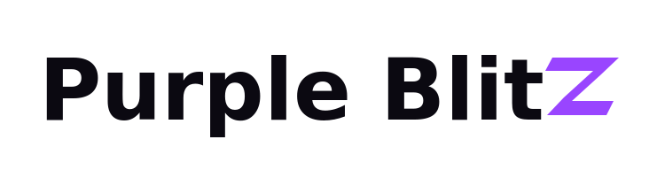
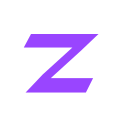
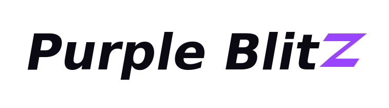
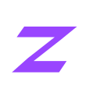
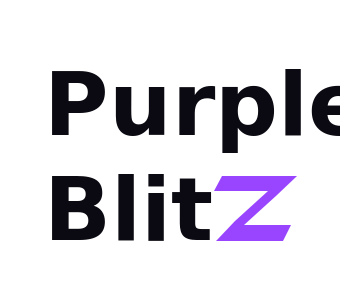
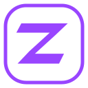

Три направления. Один импульс.
Скорость.
С характером Z.
Purple Blitz — digital-студия, в которой скорость сочетается с точностью. Тёмная основа, ясная типографика и электрическая Z: короткий визуальный импульс, который остаётся в памяти.
Рекомендуемый вариант
Quiet Power /Тихая сила


Прямая плотная типографика и один электрический акцент. Z — самостоятельная молния без декоративного шума.
Шрифт: DejaVu Sans Bold; для интерфейса рекомендуем Manrope.

72 / 32 / 16 pxДинамичный
Strike /Скорость в форме


Наклон букв и Z усиливает движение. Подходит для рекламных обложек и энергичной коммуникации.
Шрифт: DejaVu Sans Bold Oblique; для интерфейса рекомендуем Inter.

72 / 32 / 16 pxКомпактный
Signal /Цифровой сигнал


Двухстрочная композиция и знак в скруглённом контуре. Удобен для квадратных носителей и социальных сетей.
Шрифт: DejaVu Sans Bold; для интерфейса рекомендуем IBM Plex Sans.

72 / 32 / 16 pxВыбор дизайнера / предварительный финал
Quiet Power. Заряд в одной букве.
Без бесконечного цикла и стробоскопа. При настройке «уменьшить движение» показывается статичный логотип.
Electric Purple · #9945FF
Ink · #0B0911
Cloud · #F7F4FF
Afterglow · #DAB7FF
Готов к цифровым носителям
Основной выбор — № 1: он спокойнее динамичного варианта и компактнее двухстрочного. В логотипе все буквы переведены в векторные контуры: шрифты не требуется загружать, начертание не меняется между устройствами.
Для сайта рекомендуем Manrope, для текста — обычное начертание, для заголовков — 600–700. В самих логотипах используется DejaVu Sans Bold / Bold Oblique. Рекомендуемые веб-шрифты не включены в архив; их подключение — отдельный этап.
Полный логотип: от 180 px по ширине. На меньших размерах — только Z. Охранное поле: не меньше половины высоты Z. Не растягивать, не добавлять обводки и тяжёлые свечения.
↓ Скачать SVG, PNG, favicon и анимацию Открыть анимациюЭто дизайн-предложение, а не утверждённый товарный знак. Проверка регистрации Purple Blitz и сходства с существующими знаками ещё не проводилась. Основной сайт не изменён.